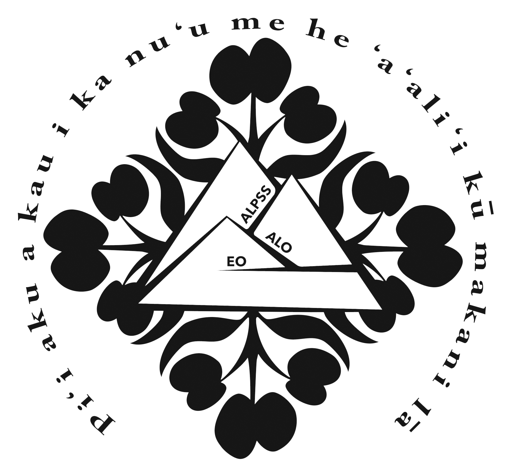

All about ALPSS
The reason why

The reason why
We wouldn't be able to go to the summits if the ALLPS program didn't have the determination to shape the next generation into dependable leaders for the future.
ALPSS means: Altrenative Learning Programs, Supports and Services. Halau Hekili isn't the only alternative program that works with ALPSS, there are other programs on the other islands that attened the summits too! It's really cool that I get to see another perspective of the world, even if its from the same state.